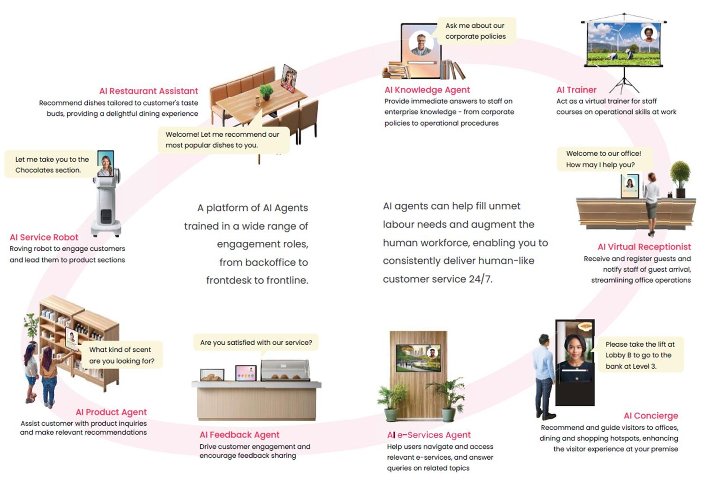
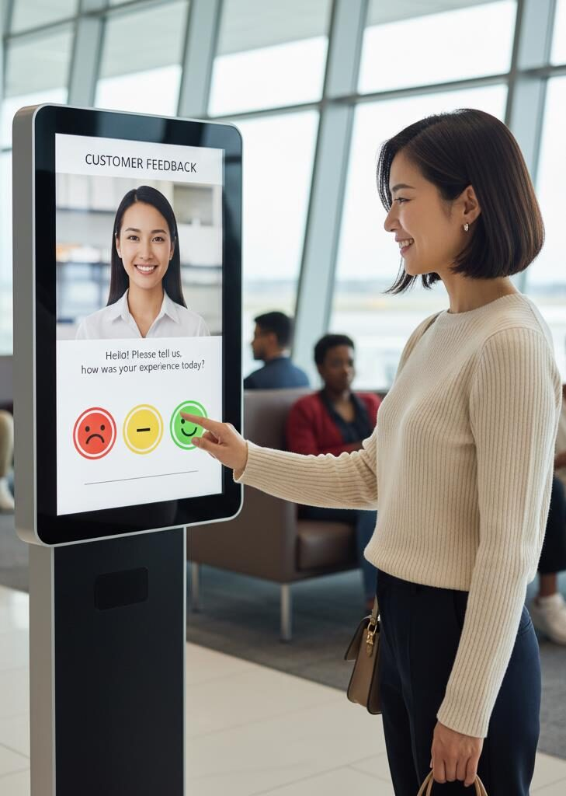
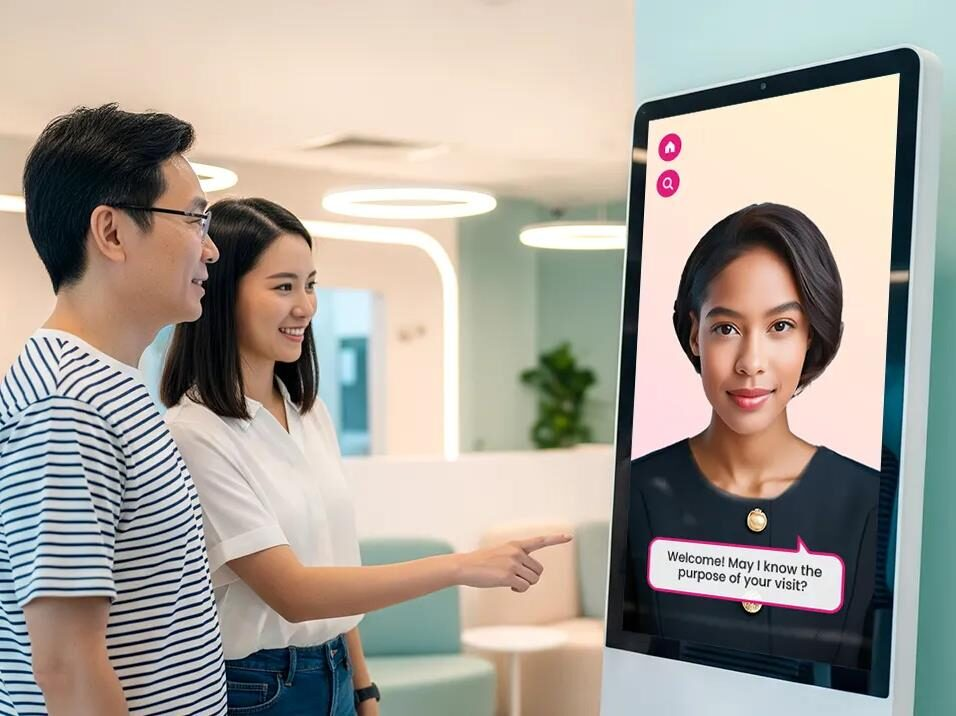
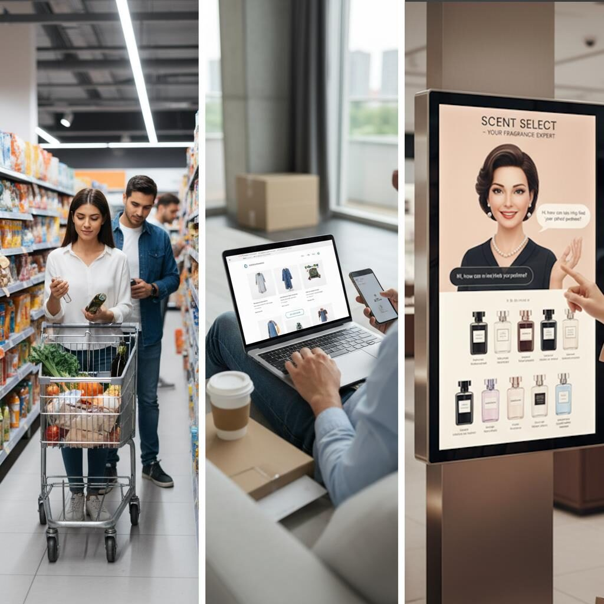
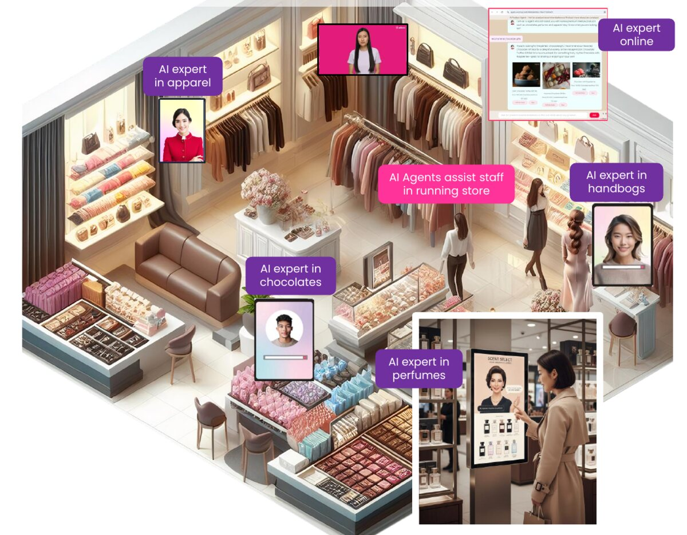

Mini-course for the AI class
Frontline Roles for AI Co-Worker Agents
This course is about frontline service agents: AI co-workers that talk with customers and visitors, the way a receptionist, shop assistant or guide would.
What you will learn
- What frontline AI agents are and what they can do
- The roles they can play, from reception to retail
- How human jobs can change, and how companies can support their staff
Scroll down to read, or use the menu to jump to any slide.
Slide 2 of 10
Will AI Take Over My Job?
Staff have real worries about AI. Each worry on the left has an answer a company can give on the right.
-
Job impactIs my job still relevant?
↔How companies can assure staffUpskilling – the company trains staff with AI skills.
-
Job impactWill my pay be reduced?
↔How companies can assure staffJob Redesign – staff manage and harness AI for better pay.
-
Job impactIs there still career progression?
↔How companies can assure staffTransformed Career Path – a new track for AI-ready workers.
-
Job impactShould I look elsewhere?
↔How companies can assure staffStaff Retention – keeping people through AI-driven pay, benefits and career.
Slide 3 of 10
Frontline multi-modal conversational AI agents
As a ‘fast-response, lean-cost, multi-role’ AI co-worker.
-
Two-way Communication
Gender-specific voice, text and touch.
-
Humanized interface / appearance
A Human Avatar Engine generates diverse, conversational expressions quickly.
-
Conversation with reasoning
The Aitom LLM Suite understands languages and responds, for example by recommending products and giving price information.
-
Versatile Human Role Intelligence
Equipped with a wide range of pre-trained human-role domain skills.
-
Conversational Insights
Able to analyse conversations with visitors and customers to draw business insights.
-
Train Once, Use Everywhere
A single “brain”, once trained, controls deployments across all sites and locations.
Slide 4 of 10
Roles for Frontline AI Co-workers
A platform of AI agents trained in a wide range of engagement roles, from backoffice to frontdesk to frontline.

-
AI Restaurant Assistant
Recommends dishes tailored to a customer’s taste buds, providing a delightful dining experience.
“Welcome! Let me recommend our most popular dishes to you.”
-
AI Knowledge Agent
Gives staff immediate answers on enterprise knowledge, from corporate policies to operational procedures.
“Ask me about our corporate policies.”
-
AI Trainer
Acts as a virtual trainer for staff courses on operational skills at work.
-
AI Virtual Receptionist
Receives and registers guests and notifies staff of a guest’s arrival, streamlining office operations.
“Welcome to our office! How may I help you?”
-
AI Concierge
Recommends and guides visitors to offices, dining and shopping hotspots, enhancing the visitor experience at your premises.
“Please take the lift at Lobby B to go to the bank at Level 3.”
-
AI e-Services Agent
Helps users navigate and access relevant e-services, and answers queries on related topics.
-
AI Feedback Agent
Drives customer engagement and encourages feedback sharing.
“Are you satisfied with our service?”
-
AI Product Agent
Assists customers with product inquiries and makes relevant recommendations.
“What kind of scent are you looking for?”
-
AI Service Robot
A roving robot that engages customers and leads them to product sections.
“Let me take you to the Chocolates section.”
AI agents can help fill unmet labour needs and augment the human workforce, enabling you to consistently deliver human-like customer service 24/7.
Slide 5 of 10
Human Job Re-design & Re-skilling
How can the role of a human staff member be re-designed in a hybrid workforce?
- Can a human role be re-designed from an individual contributor to a supervisor of AI co-workers?
- Can the staff be trained to analyse and configure AI agents for best performance?
- Can the staff earn more from the collective KPIs of the AI agent co-workers’ productivity?
Slide 6 of 10
AI Agents for Customer Service
Reducing workload on customer service
Currently, customer service officers (CSOs) actively ask users for feedback 100+ times a day.
This workload can be offloaded to AI agents to free up CSOs for more focused service.
Making customer feedback more hygienic
Instead of physically touching the panel and catching contact-related risks, users can give vocal feedback to AI agents in a contactless manner.

Slide 7 of 10
AI Agents for Office Concierge / Receptionist
AI agents can be deployed actively for hospitality functions: to receive physical visitors and coordinate with staff on visitor arrivals.
- Digital humans greet and receive guests, and find out the guest’s name, company and meeting host.
- Direct the guest to the assigned meeting facility.
- Notify staff of the guest’s arrival via SMS, WhatsApp or Telegram.
- Streamline and automate office / corporate operations, for example adjusting the aircon and preparing the meeting room.

Slide 8 of 10
AI Agents for Hospitality – Tourism & Attractions
Visitor Concierge
- Serves visitors and tourists in different languages at tourist destinations.
- Introduces visitors to the features and highlights of the attraction or MICE venues.
- Upsells and cross-sells customers’ services or merchandise to visitors, for example drinks and souvenirs.
Slide 9 of 10
Challenges in Retail & Service Industry
-
Shifting demographics
Human, online, digital or AI touch?
-
In-store sales coverage
Are customers waiting too long to be served, or to check price and stock?
-
24/7 consistent service
Is there enough staff to cover long operating hours? Are customers satisfied?
-
Know what customers want?
Is there enough data to know what customers want and make decisions?

Slide 10 of 10
Retail AI Agents
Engage Everywhere
Frictionless customer engagement
- Deploy AI experts everywhere.
- Elevate staff to trusted advisers.
- Let customers do ‘anything’ anywhere:
- Ask questions
- Get recommendations
- Check price
- Check stock
- Personalized promotions
- Find a product on a map
- Direct checkout
